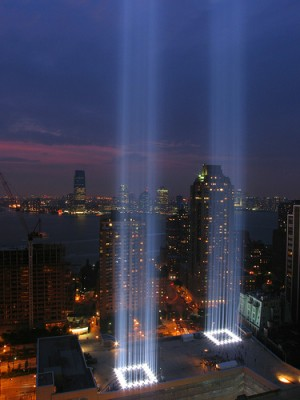
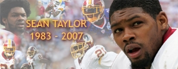
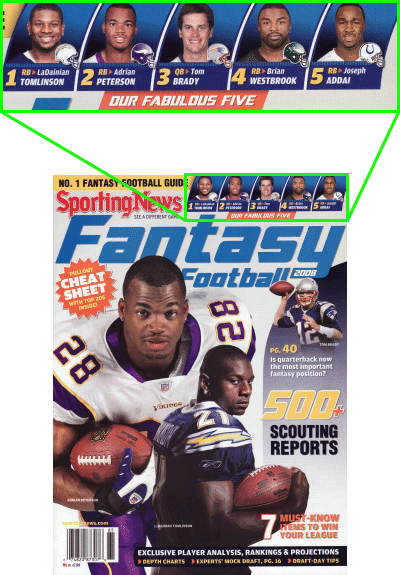

2007 Schedule/Results

Week: 1 2 3 4 5 6 7 8 9 10 11 12 13 14 15 16 17
| Weekly/Yearly Honors | |
|---|---|
| * | |
| * | Most points in a game (year) |
| * | Fewest points in a game (year) |
| * | Most lopsided victory (year) |
| Week 1 NFL Schedule |
|||||
|---|---|---|---|---|---|
| Purple Helmeted Soldiers of Love | 31 | Gonna Git Spanked | 45 | ||
| Horny Toads | 50 | Ball Busters | 45 | ||
| Da'renegades | 25 | Itchy Tortugas | 35 | ||
| Chizik's Chumps* | 56 | Kentucky Head Hunters | 24 | ||
| Beer 'n Broads | 23 | Rusty Trombones | 29 | ||
|
Gonna Git Spanked amputate the Purple Helmeted Soldiers of Love 45-31. The yank me spank me ring up the first points of the new season when Harrison hauls in his 107th hookup with Peyton in the first quarter Thursday night, but except for Randy's resurrection (183/1), the going is slow as the defense leads all scorers with 12. The numb nimrods tell a tragic tale: after first-rounder Maroney (72/0) gets blanked, the fans try to Lynch (90/1) him but the Branch (0/0) breaks and he ends up in the hospital Ward (51/1) with a fractured Palmer (194/2). The Spanked start off 1-0 - again - but better get some offense from the offense rather than the defense if they wish to continue the trend while the Soldiers lose in spite of letting it all hang out as two PATs from the reserve kicker are the only points left riding the pine. The Horny Toads abuse the Ball Busters 50-45. The one-man worm-eaters do not do much of anything as their top two picks (SJax and MoJo) average 60 total yards and zero total touchdowns, but Romo trashes the Giant waste of a defense from New York to the tune of five touchdowns and 345 passing yards. The waffling want-tank wreckers do do well with their top two picks as the pair combine for four passing touchdowns, but the underlying team theme is poor choices as there are more players scoring zero in the starting lineup (three) than on the bench (two). The Toads start off undefeated but may not taste victory again if relying on Romo to carry the team since he already shot his wad in Week 1 - unless the owner is naïve enough to think he'll tally 80 TDs this year - while it's business as usual for the Busters as the owner ignores her faithful advisor's advice and leaves the winning points sitting on the bench, this time opting for McAllister (0 points) over Barber (6 points) because she wanted to see one of her players on Thursday night TV.
The Itchy Tortugas ambush Da'renegades 35-25. The Spanish rice
rash enjoy just enough one-and-dones to win one as both backs bag
an end zone berth along with Steve Stevonne and Matt, while the
scoring is topped off by Steve Stephen's eight kicking points.
The legless lawbreakers run down the road to nowhere as all
rostered runners register a grand total of one two-point
conversion, so the team motto is it's better to receive than give
as T.O. accounts for 87/2 while T.J. goes 50/1. Just like
always, the Tortugas shuffle their lineup multiple times before
the deadline and still don't score much despite putting all
points into play except "big Ben" - sounds like life on the home
front - while the Renegades best be running back to the drawing
board to draft real running backs but can at least brag about the
following line from this week's
Chizik's Chumps ax the Kentucky Head Hunters 56-24. Gene's lean
mean sucking machine shake off the offseason dust quite quickly
as both backs hit paydirt, Marc throws a touchdown pass while Roy
catches one, and Plax smacks up the Cowturd defense for 144
receiving yards and three touchdowns. The bear baking 'billies
are all jacked up after Peyton stakes the clan out to an 18-0
Thursday lead with two to Reg and one to Marv, but the rest of
the team lounges in their front porch rockers as Javon's 119
receiving yards and a lone Robbie FG - the sum total of the Bear
offense - are the only other scores. The Chumps look real
good for the first week, much like an ISU co-ed does after the
first
The Rusty Trombones alcoholize Beer 'n Broads 29-23. The turd
trumpeters put a charge into the offense as |
|||||
| Week 2 NFL Schedule |
|||
|---|---|---|---|
| Purple Helmeted Soldiers of Love* | 60 | Ball Busters | 29 |
| Gonna Git Spanked | 44 | Da'renegades | 44 |
| Horny Toads | 49 | Beer 'n Broads | 27 |
| Chizik's Chumps | 43 | Rusty Trombones | 33 |
| Kentucky Head Hunters | 23 | Itchy Tortugas* | 60 |
|
September 11 It's been six years. In tribute, the Tribute in Light from September 11, 2007:  The Purple Helmeted Soldiers of Love break the Ball Busters 60-29. The spooging spuds sport an empty backfield and the defense scores the only touchdown besides an open-handed Palmer who bitch-slaps the Brownie defense (serious oxymoron there) into submission with 401 passing yards and six touchdowns - that's 41 points! The spooge-maker breakers watch as LT and AP do diddly while Boldin and Berrian join in the none-fun, so Brady's charged statement against the Charger defense - three touchdowns - is about all there is to talk about. The Helmeteds manage to win one but the dispersion of points among starters (68% for one, 32% for rest) may not be best for winning many more while the Balls better keep a damp cloth handy on the sideline as this makes two weeks in a row where the opposing team's QB blew a year's load all over them, and the trend seems to mean seven TDs for Brees. Gonna Git Spanked bind Da'renegades 44-44. The bruised butts get McNothing out of Donovan and Marvin, but both backs bag a touchdown while Randy mouths off for 105/2 versus the SD D and the Minnie D continues to produce maxie output. The traitors avoid a bungle as Rudi rushes for 118 yards while he and Housh tally three total receiving touchdowns, and the icing on the cake is provided by the kicker who Rackers up 11 points. The Gits remain undefeated - sort of - but are quickly running out of lucky stars as their defense outscores their starting quarterback for the second straight week while the Gades come close to capturing a win and better reconsider their Dolphin loyalties as Jamal Lewis and Ron freakin' Dayne both blow away Ronnie Brown's line. The Horny Toads brew Beer 'n Broads 49-27. The fornicateless 'phibians rack up cuatro neueve as Ocho Cinco downs the Browns with 209 receiving yards and two touchdowns while the other receiver Drivers home six points, and Tony's 186/2, Adam's 10 points and Lamont's 159/0 round out the scoring. The headless hops suffer single-digit scores as far as the eye can see as Shayne leads the way with nine and Joseph, Jon and Torry chip in six apiece. The Hornies look good for toad-faced boys as they remain undefeated while averaging 50 points per game - with zero contributions from the league's second-overall pick - while the Beers are getting skunkier by the day and wonder why things aren't getting any fresher - blame it on karma for cutting an veteran quarterback after one week because his groin became gimpy on the gridiron. Chizik's Chumps blow the Rusty Trombones 43-33. The blue Gene baddies savor the flavor of single touchdowns from the quarterback and both backs and receivers while Marc (368 yards), Edge (128 yards) and Roy (111 yards) all garner performance bonuses in their field of speciality. The butt blowers get a dozen out of Rivers on two touchdowns and another dozen out of Akers on four field goals, but everyone else combines for less than a dozen and the team is done in. The Chiziks are tearing through the league at the top of their game - pretty much the antithesis of the team's namesake (home loses to powerhouses Kent State and Northern Iowa?) while the Rusties plunge off the pedestal of perfection as they bench the league's fifth-overall pick after one week of action and look to be as nimble on the field as Britney Spears on the VMA stage. The Itchy Tortugas behead the Kentucky Head Hunters 60-23. The megamargharita are a two-headed monster as Smith smites the Texans for 153/3 through the air while Gore bores through the Rams for 81/2 over the ground, and Colston, Hasselbeck and McGahee each chip in a single passing-related touchdown. The bumpkin pumpkin poachers know they are in trouble when pManning only throws for 312 yards and a lone touchdown, and that fact is confirmed as Cedric and Javon both top 100 without scoring and Robbie only booties 8. The Itchies emerge unscathed but continued winning may be in jeopardy now that Frank and Stevonne are almost halfway to their season total for touchdowns from last year after only two weeks while the Heads, after being outscored by 69 (no, not a good number in this instance) points in the first two games, take solace in the harsh fact that some days you're the dog and some days you're the hydrant - league, say "Hello" to the Kentucky Head Hunters, this year's hydrant. |
|||
{kind=link}
| Week 3 NFL Schedule |
|||
|---|---|---|---|
| Purple Helmeted Soldiers of Love | 27 | Chizik's Chumps | 38 |
| Gonna Git Spanked | 56 | Horny Toads | 42 |
| Ball Busters | 50 | Da'renegades | 15 |
| Kentucky Head Hunters | 34 | Beer 'n Broads* | 60 |
| Rusty Trombones | 38 | Itchy Tortugas | 26 |
|
Chizik's Chumps castrate the Purple Helmeted Soldiers of Love 38-27. The psycho Cyclones air it out - and is it ever needed after their beans and cabbage pregame meal - as Roy E. registers 204 receiving yards and a touchdown, Braylon J. bags 83 and one, and Jake manages to pass for 109/2 before he breaks in the third quarter. The plum pant philistines must be plum wore out from last week's outburst as Carson can only cash in 342 passing yards and a single touchdown while Deion and Carnell each chip in single sixes and Hines can't Ward off a knee injury, ending up with more rushing yards (seven) than receiving (two). The CCs are the only team with three wins in three games but might find it difficult to air things out next week with two damaged quarterbacks and the third on a bye while the Purples return to their flaccid state after their rosy Palmer is beat from the Week 2 pounding - let's hope for their sake that the refractory period isn't 12 weeks long. Gonna Git Spanked croak the Horny Toads 56-42. The rump roasters track a trio of prime performances as Chad chimes in with two passing touchdowns and one rushing - on -1 yard - Randy renditions with 115/2 receiving and Matt rains field goals down all Stover Arizona for 14 total points. The humbled hornfrogs finally get a 100-yard game from the league's second-overall pick - without a touchdown though - but even that and 100-yard games from Driver and Cinco aren't enough and the team drowns in a bowl of Campbell's oops (190/1). The Gonnas prove they can win one without their defense scoring one - or two - as they remain undefeated - albeit with an asterisk - and leapfrog their opponents into first in the East while the HoTos get their first L but still have a strong O thanks to some draft gambling with the likes of LaMont Jordon, who was a first-rounder for the franchise last year and ended up with two touchdowns and one 100+ game - he already has two and two through three from round eight. The Ball Busters capture Da'renegades 50-15. The cahones crushers host a powwow when Tom Tom beats Buffalo to the rhythm of four passing touchdowns and 311 yards while rookie Peterson rushes for 102/1 and LT and Curry add touchdown receptions. The winless wastrels receive some good receiving games as TJ nabs 141/1 and T.O. nabs 145/0, but first-rounder Rudi is ground into doody after nine rushing yards and Drew comes up seven touchdown passes short of the seven that the Ball Busters' owner expected Monday night. The BBs enjoy the nightlife as their victory cherry gets popped even though they continue to sit the top-scoring back Barber, who has as many points as Peyton, and blow off Boldin's career day (181/2) while the Renés lose the battle of the leasts in the East and now sit alone in the cellar, with the hope for the new season starting to fade away like a fart in the Brees. Beer 'n Broads course the Kentucky Head Hunters 60-34. Strohs 'n hos' owner resorts to bush league tactics by calling one of his players a joke, and Mr. Westbrook responds by calling the owner a moron after putting up 110/2 running and 111/1 catching - almost all of it in the first half - while on the other sideline Kitna passes for 446/2. The bluegrass brain bonkers get one measly touchdown from their only weapon and that leaves the team virtually unarmed for this contest except for too little two late TDs from Bush and a defense that scores as much as pManning. BnB get off the snide by scoring 120% of their first two weeks' point total in a single game but now face an onslaught of trade requests from disgruntled players while the Kentuckys see their 100% scoring efficiency from the first two weeks plummet to a miserable 43% after leaving career days from Kevin Curtis (221/3) and DeShaun Foster (135/2) resting comfortably on the bench.
The Rusty Trombones claw the Itchy Tortugas 38-26. The hiney
horns are rolling, rolling, rolling on the Rivers as Philip rolls
for 306 passing yards and three touchdowns to counter the poor
rushing outings from Travis (35/1) and Larry (42/0). The feel-ya
tequila bet the house on Hass - and lose - as he throws for three
touchdowns - but |
|||
| Week 4 NFL Schedule |
|||
|---|---|---|---|
| Purple Helmeted Soldiers of Love | 28 | Rusty Trombones | 21 |
| Gonna Git Spanked | 22 | Itchy Tortugas | 31 |
| Horny Toads | 35 | Chizik's Chumps | 23 |
| Ball Busters | 32 | Kentucky Head Hunters | 39 |
| Da'renegades* | 43 | Beer 'n Broads | 37 |
|
The Purple Helmeted Soldiers of Love dissolve the Rusty Trombones
28-21. The purple pocket rockets launch a Maroney marooned on
the bench and a Wilkins who can only milk one PAT, but the Indy
TE newly acquired off the scrap heap plays more like Todd Heap in
his prime, snaring two touchdown receptions. The
The Itchy Tortugas discipline Gonna Git Spanked 31-22. The
talcless tacos are buoyed by Big Ben who airs it out on Arizona
for 244 passing yards and two Holmes hookups for TDs while
Witten, yet another The Horny Toads demolish Chizik's Chumps 35-23. The amorous amphibians shudder as Driver is driven to nowhere, Dunn is done, Chad is bad and LaMont is la-maimed, but Romo rides to the rescue with 339 passing yards and four total touchdowns to single-handedly outscore the opposition. The Ames airheads get single sixes out of Plax and Edge but Bulger breaks bones and blows town before the final gun, so the team is kicked to the curb because the kicker is that almost 50% of the offense is the kicker. The Toads regain their swagger as they field the finest footballers, an offense that instills fear in opponents when they take the field like Lindsey Lohan does when she gets behind the wheel, while Ch² are the last franchise to wave buh-bye to the land of losslessdom as their quarterbacklessness looks to weigh heavy on the team for the rest of the season. The Kentucky Head Hunters damage the Ball Busters 39-32. The head hounds are a day late and a dollar short as Curtis follows up his stellar 221/3 outing with a cellar 21/0, but Peyton manages to throw for three touchdowns and run for another while Jennings doesn't do much, but his single touchdown reception is the NFL-record #421 flung by Favre. The testes tacklers get an average three touchdown passes by Brady, but the tone is set when they finally start the league's top-scoring back - Barber III - and he comes through with IIIIIV, which is Roman for zero, a.k.a his first shutout of the year. The KeHeHus finally guzzle the sweet bourbon that is victory and may be better off extending the owner's vacation to 12 weeks as the club fares better without him in the clubhouse while the Busts look to be just that - not quite Brady and the Five Baboons, more like Brady, LT and Doody - as they should be 3-1 by following the monkey's initiatives ("Start Santonio, he's #1 with Hines out.") but instead are 1-3 following the owner's ("Santonio? Isn't that a city in Texas?") Da'renegades down Beer 'n Broads 43-37. The revived rebels rack up points like UT football players rack up warrants as they soak up a Griese stain off the garage floor and he throws two touchdown tosses while THE Dolphin offense (a.k.a. Ronnie Brown) rolls up 207 total yards and a touchdown and Houshmapalmersonlytarget catches 100/1 to catch the W Monday night. Boozers 'n losers start a Westbrook that's broke and things roll downhill from there, as a Kitna leads the way with two passing touchdowns while 2007's Marques Colston (a.k.a. Dwayne Bowe) catches 164/1 and Addai runs for 136/1 but it's still a touchdown short. The Gades join the Kentucky Head Hunters in the league's victory nonvirgin club and prove they can win one when it's needed - unlike the New York Mets and their colossal collapse down the stretch - while the Broads are quickly taking over for the Itchy Tortugas as the league's bottom feeder, snagging up replacements (Morris, Bowe, Graham) for other team's injured starters (Maroney, Kennison, Williams) - too bad they blow the victory by leaving one of those scabs and his 117/1 on the bench. |
|||
| Week 5 NFL Schedule |
|||
|---|---|---|---|
| Purple Helmeted Soldiers of Love | 32 | Gonna Git Spanked | 27 |
| Horny Toads | 30 | Da'renegades | 19 |
| Ball Busters | 31 | Rusty Trombones | 27 |
| Chizik's Chumps | 27 | Kentucky Head Hunters* | 45 |
| Beer 'n Broads | 12 | Itchy Tortugas | 22 |
|
The Purple Helmeted Soldiers of Love excruciate Gonna Git Spanked
32-27. The swollen salami look like dead meat when the Branch
breaks off (14/0), Marshawn is Lynched (66/0) and White is wrong
(32/0), but the old man by the Bay throws for 332/1, Wilkins
kicks 11 and a Patriotic defense provides the game-winning
points. The tortured tush see both backs break 100 yards along
with a touchdown from Jacobs, but a Pennington TD pass and three
Matt FG attempts Stover the crossbar are all the rest of the team
can muster as Laveranues is dragged over the Coles and the Mouth
is silenced. PHSoL climb over .500 for the first time since Joan
Rivers' boobs were above her belly button despite averaging less
than 30 points a game - not including the 60-point outburst over
the Ball Busters - while the Spank go from undefeated to average
in just two short weeks, which is expected when fielding a
below-average quarterback from a The Horny Toads entrap Da'renegades 30-19. The piqued pollywogs try to keep their backfield up with the Jones' as Maurice nets 112 total yards and one touchdown while Kevin returns to net 65 and none, but in the end it's in Romo they trust as he tosses 309/2 while Adam closes out the scoring with nine. The last-place loners get a whole lotta leetle efforts as Jamal pulls up lame on his first carry, the Terrellible one catches 25/0, a rookie Johnson catches 3/0 and Brees blows with 252/0, so the only touchdown comes down from Brown with 114/1 while Rackers kicks in the remaining points. The Horns win despite squandering 10¢ per receiving yard on a third-rate third-string receiver from a third-world city and share the best record in the league at 4-1 while the Renegs watch in dismay as their 19-15 lead vanishes Monday night when a Cowboy named Tony rides Buffalo hard and fires enough bullets into the end zone despite five interceptions. The Ball Busters eradicate the Rusty Trombones 31-27. The nut knockers receive nothing but bad news when Santonio pulls a hammy in pregame warm-ups and Bernard stubs a toe after only ten receiving yards, but a man named Brady throws his typical three touchdown passes and Nick becomes a Folk hero Monday night when he overcomes the 27-18 deficit with 13 points after the owner is long asleep. The fecal flutists catch a mouthful as Gates catches 113/1 and Wayne tacks on 62/1, but top pick LJ isn't even worthy of a BJ as he sets a new all-time low with 12 rushing yards and no touchdowns and the kicker - well, he's vacationing in Barbados for the week and fails to take the field. The Balls eke out their second win somehow thanks to a University of Arizona rookie and the opposition's owner, who behaves like a rookie, while the Rust need to shake off mental rust and start fielding players who are in line to play, as the kicker who was actually active this week would have delivered a 38-31 win - no Kaeding. The Kentucky Head Hunters eviscerate Chizik's Chumps 45-27. The backwoods bean beaters manage only 12 Manning points, but others pitch in for a change as Benson, Crayton, Jennings and the Tennessee D all chip in touchdowns and Gould is as good as gold with 9. The aimless Amesians are backed up to a wall as top back Alexander runs for 25/0 and number two represents that nomenclature well with 88/0, so it's up to the rest of the team - unfortunately, quarterback (used in the loosest sense) Garrard is only good for 218/1, Roy Williams adds 36/0 and kicker Brown - in an active role - adds zero. The Hunters win their second straight and first within the division as they finally realize that scoring over 20 leads to better and brighter things while the Chumps lose their second straight after a 3-0 start and may be looking to add to that straight when the defense has to score two TDs just to keep the game close. The Itchy Tortugas evaporate Beer 'n Broads 22-12. The chafing chimichangas flame-out as Colston is off (31/0), Gore is a bore (52/0) and McGahee is score-free (88/0), but when playing a virtual bye against Beer 'n Broads a touchdown apiece from Ben and Stevonne and Stephen's ten are all that is needed. Coors 'n whores finally get results from the receiver that the owner has been giving fits all season as Fitzgerald snares 136/1 (thank you, Anquan, for being hurt), but Morris the scat is the only other one to score with 102 rushing yards as Bowe and Kitna are blanked and - well, that's it for starters. The Itch miraculously share the best record in the league because they show the tightest defense by far (31 points) - or perhaps it is because the other teams give their stars the day off since the Itch suck so bad - while the Beer drop their second straight, just like their beloved Texas Wrongborns, thanks to stupid newbie roster actions à la 2000 as they start a broken Westbrook and actually bench an active kicker in favor of one on a bye - bye-bye, Broads. |
|||
| Week 6 NFL Schedule |
|||
|---|---|---|---|
| Purple Helmeted Soldiers of Love | 24 | Da'renegades | 28 |
| Gonna Git Spanked | 28 | Kentucky Head Hunters | 13 |
| Horny Toads | 43 | Ball Busters*** | 103 |
| Chizik's Chumps | 47 | Itchy Tortugas | 49 |
| Beer 'n Broads | 35 | Rusty Trombones | 25 |
|
Da'renegades flaccidate the Purple Helmeted Soldiers of Love 28-24. The dynamic derelicts paint a colorful, yet lifeless, lineup as Brown gets only 101 rushing yards and Green gets three points less while the Cardinal combo of Warner and Rackers combine for one FG and one PAT, so it's up to the receivers - Housh nabs 145/2 and Owens about half (66/1) that. The violet Viagramen sketch an almost-empty canvass as Maroney is missing and Devery doesn't make a catch, so it's all Carson all the time, but 320 passing yards and two touchdown passes to the opposition's receiver negates all benefits. Da'r are the last team to earn their first divisional win and do so despite opting for the most recent scab acquisition (Warner) over the previous scab acquisition (Griese) and the older of the two farts contorts his elbow after two passes while the Soldiers need to hope for an early Christmas with a stocking full of RBs as two are on byes and two are injured out of the five on the roster. Gonna Git Spanked fell the Kentucky Head Hunters 28-13. The reddened rears follow the franchise's foot as Matt by far and away leads the way with five FGs and a PAT, and he makes the rest of the roster look like doormats as McNabb only throws one TD against the hapless Jet defense and Moss catches one TD against the more-hapless Cowgurl defense. The whiskey wig whackers give the team the week off thinking they are on a bye (note to owner: bye weeks should only be taken when playing the Itchy Tortugas), but Crayton and Gould stay in town and amass six and seven points, respectively. The Gits return to their winning ways after a two-week layoff but must get other players in on the scoring - no, having an 82% efficiency with PK registering 57% of the offense is NOT good - while the Heads have their season epitomized by one of their starters as Bush earns his first 100-yard rushing game of the year, only to lose three yards over his next four carries and end up with 97. The Ball Busters flatten the Horny Toads 103-43. The offensive orbs unleash the perfect storm:
The Itchy Tortugas frustrate Chizik's Chumps 49-47. The fortunate fajitas may be back on track as Hasselbeck is back with 362 passing yards and two touchdowns while both backs register a touchdown on less than 100 rushing yards combined, but it's Stevonne's snag of a 65-yard TD pass from Ancientverde late in the game that gets barely enough to win. The ISUcks are stuck with Garrard at the helm but he doesn't actually crash and burn thanks to two touchdown passes, Plax gets his usual one TD reception while Braylon gets a very unusual three, and Edge even chips in 80/1 via turf, but a blocked Brown boot and its lost three points makes it all pointless. The Tortugas somehow manage to find themselves owners of the league's best record at 5-1 and are actively being recruited by David Copperfield for their mastery of sleight of hand while the Chiz have now dropped three straight after winning three straight, probably due to wasting the fourth-overall pick on Shaun Alexyawner and his 69/0.333 per game. Beer 'n Broads flatulate the Rusty Trombones 35-25. Shiner 'n whiners don't do much of anything, punctuated by scab Sammie's 14/0 before breaking and Holt's horrendous 33/0, but scab Derek Anderson takes advantage of the dull Dolphin defense and throws three touchdown passes and runs in one more. The tush tooters finally play a full contingent of starters, but most are stopped up due mainly to Gates 'n Rivers hiding out in LT's shadow and JJ's usual nothing, so LJ's first 100/1 of the season and a freak Muhsin touchdown are about all there is. B'nB win to join the threesome in the Western cellar - and league cellar - thanks to a pseudo-bye against the Trombones and look forward to another pseudo-bye next week against the LT-less Ball Busters while the Trom drop their third straight and have their season epitomized by one of their starters as Larry fumbles his first touchdown out of the back of the end zone from the one yard line. |
|||
| Week 7 NFL Schedule |
|||
|---|---|---|---|
| Purple Helmeted Soldiers of Love | 33 | Itchy Tortugas | 34 |
| Gonna Git Spanked | 41 | Chizik's Chumps | 15 |
| Horny Toads | 24 | Kentucky Head Hunters | 24 |
| Ball Busters* | 58 | Beer 'n Broads* | 8 |
| Da'renegades | 38 | Rusty Trombones | 34 |
|
The Itchy Tortugas grill the Purple Helmeted Soldiers of Love 34-33. The grating gorditas still seem to be much ado about nothing as Gore is Frankly blanked, Colston is Marques'd for nothing and Witten is smitten with scorelessness, but Matt "I wish I had my brother's wife - and hair" Hasselbeck throws for 195/2, Willis is talkin' about his second 100-yard rushing game and second touchdown of the year and the newly-acquired defense provides a TD off a fumble. The lavender longfellows run off at the mouth (a.k.a. meatus) as the department store of Marshawn and LenDale's stock 84/1 and 104/1 while the five 'n dimes of Palmer's and Clark's put 226/1 and 66/1 on the clearance rack, but it's not enough and the team goes out of business - for the week. The IT set the current mark for the year's longest winning streak at four and prove that their transaction wizardry is a gift by exchanging defenses and buying a win for $2 while the Helmets plunge to least in the East - equivalent to second-best in the West - but get to face the load-lacking Ball Busters next week. Gonna Git Spanked grind Chizik's Chumps 41-15. The hurt haunches are an anomaly in action when it comes to PP as Portis rushes for 43/2 while Parker rushes for twice as many yards and two less touchdowns, but the Freak makes the Miami D reek with 122 receiving yards and two touchdowns while McNabb and the Minnesota D match TD output with one apiece. The Trice Stadium mice don the uniform of Z - Zeroman - as the running backs (two former top-two picks) tally 83/0 and 47/0, the receivers nab 43/0 and 23/0 and Garrard throws 72/0 before throwing out his ankle - thank goodness the kicker has a career day with four FGs and three PATs. The Wanks weasel their way to the top of the Eastern division despite nobody knowing how - oh yeah, the Mouth leads the team (including quarterbacks) with ten touchdowns and the defense has about half as many touchdowns as the top quarterback - while the Chump look and smell like a horse's rump with four losses in a row, four poopy QBs and thirteen players capable of scoring but only one doing so. The Horny Toads gild the Kentucky Head Hunters 24-24 - and vice versa. The hot hoppers look as lost as Anna Nicole Smith on hallucinogenics as Romo and MoJo both say no mo' to a second touchdown while Jordan (29/0) and McDonald (17/0) are just wastes of space, but nine Vinatieri points save the day - well, halfway anyway. The loco yokels finally expose their Bush and it leaks out a touchdown and two-point conversion, but Benson (46/0), Curtis (62/0) and Crayton (19/0) are as worthless as compassion in Katie Couric - thank goodness Peyton throws an F.U. touchdown with four minutes to go Monday night to stake the team to a 24-23 lead while the team goes crazy - right up until Adam kicks the PAT a few seconds later. The Hornies get back on the winning track - well, halfway anyway - a week after a 60-point shellacking and manage to stay tied for first in the East despite wielding the worst defense while the Kent are no superhero as the 2-4-1 record plants them smack dab in the middle of the West, which would be worthy of worst in the East. The Ball Busters guzzle Beer 'n Broads 58-8. The spunk-factory spankers enjoy a rushing touchdown from both sides of the field in the Vikings-Cowboys game, but once again it's Tom Brady who steals the show, this time finding more gaping holes in the Miami defense than Britney Spears getting out of a car as he winds up with 354 yards passing and six touchdowns, 30 of those 40 points coming in the first half. The skanks that drank set a new standard in stank as Addai and Westbrook both top 100-combined yards without scoring, Kitna hurls 147/0, and Fitzgerald comes closest to scoring with 97 receiving yards while Sidney Rice (???) of the owner's beloved Vikings is farthest, catching 97 yards less. The Busters are over .500 thanks to Brady putting up more points than eight teams this week - and just missing the ninth by one - and have now outscored their opponents by 110 over the last two weeks while the Broad "better" their - and the league's - season low mark of 12 set two weeks ago and seem as ignorant as your typical Florida Gator graduate, this week represented by Channing Crowder who thought he'd need the services of a translator while in London this coming Sunday and also spouted these gems:
Da'renegades grasp the Rusty Trombones 38-34. The air apostates are an aerial attraction as Drew tosses 219 yards and two touchdowns, T.O. catches 103 yards and one touchdown while TJ does 43 and one, and Hanson kicks five pigskins through the uprights for 11 points. The anal air horns belch as both Broncos are blanked, but eManning throws two touchdown passes, Johnson runs for 112/1 and Akers tallies ten to get the team within 38-31 going into Monday night - unfortunately, Wayne hauls in 131 yards receiving but ne'er the touchdown does catch. The Renegades somehow get to .500 with the lowest-scoring offense and without a running back worth spit, especially now that Ronnie Brown, a.k.a. THE Dolphin offense, is out for the year while the RuTs are stuck in a four-game losing rut and may soon have Oscar the cat curling up in their lap. |
|||
| Week 8 NFL Schedule |
||||||
|---|---|---|---|---|---|---|
| Purple Helmeted Soldiers of Love | 23 | Ball Busters | 40 | |||
| Gonna Git Spanked | 27 | Horny Toads | 28 | |||
| Da'renegades | 28 | Itchy Tortugas | 28 | |||
| Chizik's Chumps | 25 | Rusty Trombones | 45 | |||
| Kentucky Head Hunters | 22 | Beer 'n Broads* | 67 | |||
|
While the status monkey is usually too busy during the regular season to deal with JPG embellishment in tribute to enthralling NFL stories, some are just way too juicy to pass up. So, without further ado...
The Ball Busters hammer the Purple Helmeted Soldiers of Love 40-23. The sack sackers scream with horror as both runners are bummers and both receivers are deceivers, but Brady breaks barriers with his eighth-straight game of at least three touchdown passes and then runs in two touchdowns to boot while Elam boots seven. The mauve man missiles stomp on burning doggie doo as both backs' potential breakout days bomb with just three performance points between them while Palmer only passes one touchdown through the Steel Curtain, and all is lost when a receiver from one undefeated offense only tallies 44/0 while a receiver from the other undefeated offense gets half that. The Bust tie the season high of four straight wins but might want to get other players going other than the QB and PK, lest they become a bust down the road, while the Purple are looking more and more blue with their third straight loss as they remain the lone team under .500 out East. The Horny Toads hit Gonna Git Spanked 28-27. The perverted pond-hoppers grin like jack-o'-lanterns after the coin toss for facing five-sevenths of a team, so Kevin Jones' nice 105/1 day on the ground, a defensive touchdown and Cutler and Denver's only Monday night touchdown are just enough to eke out the win. The reddened rumps turn ghostly white after the harsh realization of turning in a partial lineup for this week's title tilt, and while both backs break 100 with Willie adding a touchdown as Donovan downs 333/1 and Moss makes 47/1, getting zippo from the top receiver and kicker kicks the game to the curb. The Toads get major lucky and see a major contract handed to their quarterback - $67.5M to help afford a portion of the plethora of STD shots and accompanying vaccinations for getting lap dances from Britney - while the Gonna are gonna get spanked if they continue their newbie numbskulledness by starting players on a bye and/or players ruled out way before the lineup deadline, it's just simple first-grade math - 5 (actual starters) + 6 (Reed, the "other" kicker) = W. Da'renegades hogtie the Itchy Tortugas 28-28. The overwhelmed outlaws neither trick nor treat as TJ and Wes both break the eighties in receiving yards and bag a touchdown while Brian blows yet still manages a touchdown pass amidst the bountiful interceptions, but Ahman is AWOL as is any angst for an agreeable aftermath. The edgy enchiladas are trapped in eerie limbo as Frank fails as bad as Frank's draft choices, bottom-feeding pick Jesse flails in the London rain and both receivers put together a 53/1 day, but big Ben bangs out 230/2 and Stephen boots seven PATs and a FG to earn the T. The Renés were at .500 and are still at .500 as they seem fit to be tied thanks to starting a back who would rather lie flat on his back than carry the team on his back - and bench a QB who scores one less point than the entire team - while the Tort watch their four-game winning streak get halfway hacked but are fortunately still king of the hill of the dungpile that is the Western division. The Rusty Trombones hurt Chizik's Chumps 45-25. The sphincter symphony rise from the grave by bucking the trend of starting two backs as their buckin' Bronco backfield is benched because of boo-boos, but Antonio breaks down the Gates with two receiving touchdowns while Eli has almost half as many rushing yards (25) as passing (59) to go with a rushing TD and Reggie receives 168/1. The State slop are driven batty because Burress is under duress with a scant 14/0 while Thomas is a mess, Dayne is far from great and Kasay can only parlay one PAT, but Braylon boasts two more touchdowns on 117 receiving yards and Bulger bandies 310/1. The Bones break their four-game belly flop to maintain middletude in the West - just a mere 2½ games out of first - despite playing two running backs that don't suit up while the Chum are looking and smelling like shark bait as in five short weeks they go from 3-0 and on a roll to 3-5 and barely alive. Beer 'n Broads hang the Kentucky Head Hunters 67-22. Stag 'n hags watch with ghoulish delight as they drop the bomb-o combo when last-minute substitution Addai adds 100/2 on the ground and 8/1 in the air while Westbrook wangles 46/1 times two, then pour it on as scab Anderson airs out 248/3 and hobbling Holt hauls in 110/1. The houndin' hayseeds get egged and teepeed as politicians Benson and Bush veto any offense on behalf of the Curtis amendment while Gould is a bad Bear booter with a single point, so pManning (254/2) is over half the offense while Jennings (141/1) scores the rest. The Beer rebound from the season low in points (8) to second-high (67) while pulling big-time good and bad personnel moves - turning in a second lineup sitting Graham for Addai (+21 points), yet turning in two lineups with Bowe (bye) - while the Uckies are finally all alone in worst place but at least get to savor one true highlight as the Jennings' touchdown reception on the first play of overtime Monday night is worth nine points - and probably the last Monday night miracle from Mr. Favre. |
||||||
| Week 9 NFL Schedule |
|||
|---|---|---|---|
| Purple Helmeted Soldiers of Love | 45 | Horny Toads | 35 |
| Gonna Git Spanked | 26 | Da'renegades* | 77 |
| Ball Busters | 72 | Rusty Trombones | 17 |
| Chizik's Chumps | 24 | Beer 'n Broads | 27 |
| Kentucky Head Hunters | 42 | Itchy Tortugas | 33 |
|
The Purple Helmeted Soldiers of Love impale the Horny Toads 45-35. The amethyst acucullus army sing California Dreamin' a cappella as Cal alum Marshawn rushes for 153/1 and even throws a touchdown pass, USC alum Carson passes for twice as many touchdowns and USC alum LenDale rounds out the big day for Pac-10 men by rolling his round self over the ground for 100/1. The aroused amphibians neither a rushing nor receiving touchdown get - in fact, the only thing Ocho Cinco gets is his bell rung - so the couple bragging points are 324 yards and three touchdowns passing by Romo and a 100-yard kickoff return by Jones-Drew. The Loves poke their three-game losing streak in the pooper but cannot get too full of themselves even though they are one of two last-place teams to defeat first-place teams this week while the HoTos drop out of first for the first time this year and better turn their focus intradivision as they are undefeated against the West but an average .500 in the East.
Da'renegades invalidate Gonna Git Spanked 77-26. The rolling
rebels whip out the whipping sticks as the Brees is once again
blowing through Nawlins (445/3), T.O. flies through the Eagle D
for 174/1, TJ gets a touchdown reception in his eighth-straight
game and Jamal
The Ball Busters implode the Rusty Trombones 72-17. The
stampeding stone stompers have another ho-hum three-touchdown day
passing from Brady (an NFL record nine weeks in a row with at
least three scoring strikes) while Beer 'n Broads' castoff Evans
catches 165/1 and Tomlinson and the defense add single TDs, but
the headliner is rookie Peterson setting the NFL single-game
record with 296 yards rushing, running in three touchdowns
to boot. The back-end blowers get a rushing and receiving
touchdown from their top pick before he pulls up lame and
absolutely nothing from their other back before he pulls up lame,
and that's all the news that is news as a lost Rivers (197/0)
leads to a locked Gates (10/0). The BBs are cruising through a
five-game winning streak, leaving lots of busted balls in their
wake with an average victory margin of over 37 points
during that span - including routs of 60, 55 and 50 - while the
Rusty are really starting to show their draft-day rust as they
join fellow Beer 'n Broads imbibe Chizik's Chumps 27-24. Harp 'n hookers Addai up the points as Joseph juggles running and catching well against a strongly Patriotic defense, gaining 112/0 and 114/1 respectively, then a Westbrook rushing touchdown and six Anderson passing points - without a touchdown - rounds out the scoring. The Cy lows are running in place as first-rounder Shaun rushes for 32/0, second-rounder Edgerrin rushes for 15/1 and WR Roy rushes for -8/0, so the only other points come from Sage Rosenfels (???) on a passing touchdown and an even dozen from kicker Josh. The Broads and the Chiziks experience offsetting receiver blunders in this low-scoring affair as Fitzgerald inexplicably steps out of bounds with a clear path to the end zone while Edwards drops a gimme in the end zone - very appropriate since both teams need to catch a clue anyway. The Kentucky Head Hunters injure the Itchy Tortugas 42-33. The country cranium chasers put their Bush on display for all to see and he takes in 72/1 rushing and 43/1 receiving, Peyton is also good for a touchdown through the air - passing, that is - and one over ground, and Jennings becomes the third 12-point scorer on the day with two receiving touchdowns. The bumbling burritos are led by Hasselback, who hustles back in the pocket and throws for 318 yards and two touchdowns while whitey-tight-E Witten catches 77/1, but Gore doesn't even play, Chambers returns to his Miami-self, and McGahee (50/1) doesn't have enough Monday night muscle to get it done. The Hunters happily join the Purple Helmeted Soldiers of Love as worsts beating firsts this week and leapfrog into the middle of the below-average West in doing so while the Itchies, supposed masters of the transaction wire, start a Gore who is gone - unfortunately, NOT Al - and watch their five-game undefeated streak - and seriously lucky streak - go by the wayside. |
|||
| Week 10 NFL Schedule |
|||
|---|---|---|---|
| Purple Helmeted Soldiers of Love | 51 | Da'renegades | 30 |
| Gonna Git Spanked | 37 | Ball Busters | 13 |
| Horny Toads | 43 | Beer 'n Broads* | 75 |
| Chizik's Chumps | 29 | Itchy Tortugas | 33 |
| Kentucky Head Hunters | 32 | Rusty Trombones | 18 |
|
The Purple Helmeted Soldiers of Love jail Da'renegades 51-30. The staff sergeants throw two duds to the wind as Devery (20/0) and LenDale (12/0) really smell, but Brett bends over the Viqueen defense for 351/3 passing, Jeff puts 13 through the posts, and Marshawn and Hines pull-off the rare double play of each scoring a touchdown and two-point conversion. The flailing fugitives fall flat on their face by the fact that Houshyourmama does NOT score while Rudi and Jamal suffer empathy pains and only combine for 81 yards rushing, so the brunt of the offense is the blunt one's 125/2 day receiving and two Drew passing TDs. The Helmeted erectify themselves in time to perhaps make an electrifying run to the playoffs - but not if they keep breaking backs (both starters this week) like Oprah during one of her no-diet cycles - while the Renegade need not panic about not having any backs at all as they are in last place in their division, an entire whole almost-insurmountable one game out of first.
Gonna Git Spanked jostle the Ball Busters 37-13. The
battle-scarred behinds see the Don return to form as he puts a
hit on 251 passing yards and four touchdowns - including a
terribly underthrown ball that Reggie Brown manages to haul in
for a double-whammy - while the backs go pee-pee as Portis and
Parker push for 137 and 105 rushing yards. The offensiveless
orbs are majorly undermanned when Mr. Brady skips town on the
bunch and his replacement - and the league's leading
rusher - both put in a little over a half before leaving injured
without scoring - so LT's AP-tying rushing touchdown and Nick's
seven kicks are it. The Git feel so confident in taking on their
Beer 'n Broads jump the Horny Toads 75-43. Schlitz 'n tits double-down on jacks - and draw an ace - as Brian thrashes the Deadskin defense for 100/1 rushing and 83/2 receiving while Shayne kicks seven field goals, then Derek pitches three touchdown passes while Larry Fitz gets two receiving touchdowns. The charged croakers once again exhibit a Tony majority as he leads with four passing touchdowns while Action runs in a touchdown and throws for one as well, but the epitome of the day is KJ rushing for one touchdown on -4 yards while Mr. Clutch - a.k.a. Adam - shanks two FGs. BnB are plowing through the West with Westbrook at the wheel - although it definitely helps when you get over 25% of nine week's worth of offense in Week 10 - while the Horny better read their tarot cards to figure out why 43 is so unlucky as the two times they have put that number on the scoreboard their defense has given up 103 and 75 points. The Itchy Tortugas jettison Chizik's Chumps 33-29. The flaming flautas are in with zen as Ben hums a two-pointer and two touchdowns and runs in one as well - from 30 yards (WTF?) - but that's about it as Willis manages the Raven's only touchdown - again - and Colston catches a C-note. The aimless Ames-dwellers are left gasping for air as Bulger hurls for an unusual 302/2 but the rest of the team hurls - James jumps over the Edge (60/1), Plax is waxed (24/0), Norwood is deadwood (0/0) and Braylon is just plain lucky - one 16-yard catch in the end zone for a touchdown after the original call of incomplete is overturned by review. The Itchy have now established themselves as the luckiest unskilled team on earth as they move to 7-2-1 when they should be 2-7-1 because ... well, keep reading for the latest example ... while the Chizik extend the year's longest losing streak to seven and must feel like the football gods have forsaken them with two FGs taken off the scoreboard Monday night - one by holding (resulting in punt), the other by offsides (resulting in missed FG). The Kentucky Head Hunters jingle the Rusty Trombones 32-18. The pleasant peasants must be thinking Wildcat basketball as they rain down two-pointers on their opponents - one passing by Peyton, two rushing by Reggie - and the duo chip in three six-pointers as well to offset the no-ops that are Curtis, Jennings and Foster. The rear-end woodwinds are as lethargic as Kirstie Alley on her post-Thanksgiving tryptophan high as Julius only musters 48/0 while Travis doesn't play and Antonio catches 26/0, so one passing touchdown from Eli and a nice Reggie day of 140/1 in Marvin's absence are not much of a basis for glory. The Hunter have captured two victories in a row over the best and worst in their division and now set their sights on tracking down some Renegades - the worst in that other division - while the Trombone have their backs to the wall with no backs to speak of and have resorted to sending in lineups with empty backfields as their top pick is broken and their second pick has almost as many no-shows as he does children with different women - maybe he's off working on #10. |
|||
| Week 11 NFL Schedule |
|||
|---|---|---|---|
| Purple Helmeted Soldiers of Love | 37 | Beer 'n Broads | 36 |
| Gonna Git Spanked | 47 | Rusty Trombones | 17 |
| Horny Toads | 46 | Itchy Tortugas | 26 |
| Ball Busters* | 56 | Chizik's Chumps | 30 |
| Da'renegades | 51 | Kentucky Head Hunters | 23 |
|
The Purple Helmeted Soldiers of Love keg Beer 'n Broads 37-36. The crotch cobra corps must be thinking wedding as they start something old (Farve, 218/3), something new (Maroney, 19/1), something borrowed (Grant, $2 for 88/0) and something blew (Ward and Clark, 47/0 and 15/0), but when all is said and done it's a fumble run back for a touchdown Sunday night that clinches the win. Ales 'n tails must be thinking devil worship as the signs are everywhere - Addai (72/1), Anderson (274/0 with a rushing touchdown), Fitzgerald (93/1) and Holt (55/1) all score six while Graham (2 FGs, 3 PATs) and Westbrook (148/0) average six, but it's the six that gets away (Raven defense) that costs the day. The Loves continue to erectify their fans - although most agree that's in very bad taste - as their win streak reaches three despite trashing both starting running backs again - Ryan in Grant's tomb (just as the status monkey predicted last week) and later Laurence - while the Beers have their three-game winning streak snapped and sit alone in second in the West, although they are in fifth place in the more meaningful (to them, anyway) wildcard race.
Gonna Git Spanked knuckle the Rusty Trombones 47-17. The
battered butts start off dismal as Willie is parked in the garage
(52/0), Clinton is hintin' at resignation (36/0) and McNabb is
flab (34/0) before yanking an ankle and numbing a thumb, but Moss
is the boss as he snares 112 yards receiving and four
touchdowns in the first half alone. The The Horny Toads kick the Itchy Tortugas 46-26. The fervid frogs unleash "The Birds" - Jays, in this case - as Andre Johnson returns to catch 120/1 while Chad Johnson adds 86/0, Maurice Jones-Drew rushes for 33/1 while Steven Jackson earns 112 combined yards, and the Jacksonville D shows up, but the main damage is inflicted by Romo, who passes for four touchdowns. The noxious nachos unleash their Willie, who runs for 102/1 against that Brown stain of a defense, but it is much too little as Big Ben also comes up small (195/1) against the porous Jets defense and Stephen kicks eight PATs but nary a FG. The Toad welcome back their long lost Johnson with open arms - which is better than some other open possibilities - and for a change know how to put it to good use while the Torts are to the West what the Dolphins would be to Texas District 14-5A - a crappy team playing amongst a bunch of inferior teams which make the crappy team seem not so crappy. The Ball Busters kill Chizik's Chumps 56-30. The wank-tank wreckers faint right off the bat as the Bengals-Cardinals air show produces receiving touchdowns from both sides (Henry 81/1, Boldin 71/1) - a true rarity for the Balls - and Tomlinson adds 155 total yards with a rushing touchdown, but once again the axe is wielded by Brady who bombs the Bills for 373 passing yards and five touchdowns to blow away a 30-22 deficit. The overblown Cyclone's week is full of questions as they get single touchdowns from Bulger (only one against the 49ers?) and James (only one against the Bengals?) and performance points from Thomas Jones (117 rushing yards against the Steelers, how?) and Roy Williams (where have the 100+ yards been since Week 3?), so Josh leading the way with 12 puts an exclamation point on the loss. The Busters dial-up Major Tom just in time to get the rocket flight that is their season back on course as they now sport a 104-point lead over the second-best offense while the Chumps eighth straight setback guarantees the league's lengthiest losing streak of the year and a second straight losing season - maybe draft + beer isn't such a bad idea after all? Da'renegades kindle the Kentucky Head Hunters 51-23. The nonstop nonconformists get another Jamal rushing touchdown (92/1) and another Rudi shutout (25/0) while TJ returns to the land of the scoring (87/1) and Drew drags by with one passing touchdown, but it's the receiving end of the Romo-to-T.O. show that keeps the scoreboard going - 173 receiving yards and four touchdowns. The recon rubes enjoy a really rare Benson rushing touchdown and Jennings latches on to another Favre touchdown strike, but Manning (163/0) is yearning for the old days, Crayton (16/0) is way done and Bush (34/0) is just plain smelly. The Renés get back on the winning track but may have a long way to go since they have the worst offense and only losing divisional record in the East while the Head seem to be suffering severely from Peyton's admonished manlove for Marvin as he has eight touchdowns versus ten interceptions over the last six games without Harrison. Editor's Note: Granted three kids and three decades of drinking have rendered the status monkey's memory moot, but recollection of the last time all teams in a division were over .500 this late in the season is noticeably absent, and it's due to the dominance of the East over the West - 15-6-2 for the year, 5-0 this week with an average margin of victory of 21 points. |
|||
| Week 12 NFL Schedule |
|||
|---|---|---|---|
| Purple Helmeted Soldiers of Love* | 48 | Kentucky Head Hunters | 35 |
| Gonna Git Spanked | 32 | Beer 'n Broads | 45 |
| Horny Toads | 34 | Rusty Trombones | 31 |
| Ball Busters | 29 | Itchy Tortugas | 46 |
| Da'renegades | 40 | Chizik's Chumps | 12 |
|

The Purple Helmeted Soldiers of Love lynch the Kentucky Head
Hunters 48-35. The beaver cleaver brigade feast on Lion meat for
Thanksgiving courtesy of meat Packers Favre and Grant, who pass
and rush for 381/3 and 101/1, respectively, then kick back on the
Beer 'n Broads lash Gonna Git Spanked 45-32. Millers 'n hustlers
must be thinking Beverly Hillbillies as their season is saved by
what comes up through the ground as bubblin' crude - oil Derek -
who drills Houston for 253/2 while Larry gives the 49ers Fitz
with 156/2, then both backs pile on with single touchdowns on
little yardage. The afflicted asses are stuck with the Piano Man
behind center and it shows - the other Joey catches 21/0 while
the NFL's leading receiver adds 43/0, Willie wushes for 81/0
through a Pittsburgh swamp and Chester
The Horny Toads lambaste the Rusty Trombones 34-31. The fiery
fly-eaters get
The Itchy Tortugas level the Ball Busters 46-29. The scratchy
salsa savor the flavor of a single touchdown from each offensive
starter until a late 35-yard touchdown scamper from Gore gives
him two on the day and tops the 100 plateau at the same time -
nice of the team's top pick to finally make Da'renegades liquidate Chizik's Chumps 40-12. The daunting dissidents sic their broker upon their enemies, and Schaub does his job with 256 passing yards and two touchdowns, and other folks pay dividends as well as Lewis rushes for 134/1, R Johnson rushes for 88/1 and Owens receives 65/1. The twisted twisters underwhelm beyond all expectations - Marc passes for only 32 yards before bowing out with a Bulging headache, Edge and Thomas rush for 78 and 40 yards, and Braylon and Roy catch 57 and 32 yards - fortunately, the former receiver nabs a score to keep the team from setting a new scoring low for the season. The Gades continue to win despite their apparent shortcomings and the owner talking smack about the players behind their back while the Chiz are eliminated from playoff contention, haven't tasted sweet victory since Week 3 and have a very good shot at the all-time league record for consecutive losses as they face three teams in the last three weeks with .500 or better records. |
|||
| Week 13 NFL Schedule |
|||
|---|---|---|---|
| Purple Helmeted Soldiers of Love | 34 | Horny Toads* | 57 |
| Gonna Git Spanked | 28 | Kentucky Head Hunters | 40 |
| Ball Busters | 52 | Da'renegades | 37 |
| Chizik's Chumps | 24 | Beer 'n Broads | 25 |
| Rusty Trombones | 34 | Itchy Tortugas | 36 |
|
The Horny Toads mutilate the Purple Helmeted Soldiers of Love 57-34. The amatory Bufo americanus are totally Thursday as they field half their offensive starters and wrangle Romo's 309/4, Georgetown High alum Crosby's nine and Driver's doughnut, then sit back and listen to the O'Jays - who sound more like 6'Jays - as Jackson, Johnson and Jones-Drew all hit paydirt once. The phallic patrol are totalled Thursday as scab Grant runs in two touchdowns but Favre Packs up and leaves early after only 56/0, and Sunday offers too little to overcome the 36-12 deficit with Clark's 60/2 and White's 60/1 - before getting hurt. The HoTos are victorious for the third week in a row and pick the right time of the year to live up to their namesake - hot - as they remain a half-game ahead of the Ball Busters while the Purples have their four-incher snapped off and droop to third in the East although they have a bye next week with Chizik's Chumps to look forward to, whose last victory was waaaay back in Week 3 against ... the Purples. Uh oh! The Kentucky Head Hunters mar Gonna Git Spanked 40-28. The cabin-dwelling clodhoppers start off the week with another Greg grab of a Thursday touchdown toss, but it's Peyton passing for four touchdowns at home in the RCA Dome that provide enough firepower to negate Reggie, Vernon and Adrian's nils. The finished fannies go kablooie led by Joeys as Galloway (159/0) almost manages as much yardage as Harrington (184/0) - before the latter is yanked - so individual touchdowns on indecent yardage is all Clinton (50/1), Chester (70/1) and Randy (34/1) have to offer. The Hunters have a remote chance of finishing at .500 if they win out but have about as much chance of making the playoffs as George Bush has at winning on preschool Jeopardy! while the Gits have lost two in a row when it matters most but deserve this one for putting a stiff like Joey Harrington at the helm this late in the season. The Ball Busters massacre Da'renegades 52-37. The tater tramplers run amok as LT racks up 177/2 and Fargas - that's right, Justin F-a-r-g-a-s, an Oakland R-a-i-d-e-r running back - tacks on 146/1 while Folk fetches 13 kicking points, so for the first time in three weeks Brady's late night escapades (257/2) aren't even needed. The treacherous turncoats taunt as T.O. tags another Thursday touchdown - along with about 100 more yards receiving - while Desert Storm produces 21 points under the Arizona sun from Colonel Kurt (169/2) and noncom Neil (nine points), but a freaky Jamal receiving touchdown is all that's left in the tank as TJ tallies jack and Kolby smells like festering cheese. The BBs emerge from the murky middle of the Eastern mud to claim sole possession of second in the division and first in the wildcard and have All Day to decide who to start in the backfield with LT - shouldn't take that long though - while the Renegades just can't seem to figure out how to handle folks from the East as they drop to the worst divisional record at 2-4-1 and have the best divisional team to face next week. Beer 'n Broads moronify Chizik's Chumps 25-24. Harp 'n harlots hum "Road to Nowhere" as Addai is no-way (67/0), Bowe is no-no (55/0), Graham cracks in the Pittsburgh flood (four points) and Larry's groin gives the owner fits (no show), but the team is fortunate to face an unarmed opponent so Anderson's 304/2 and Westbrook's 93/1 just make the grade. The imbecilic Iowans come up short in many aspects of life - including starting quarterbacks - as Bulger bows out before the deadline but ends up in the lineup anyway, and his absence trickles down to the rest of the team as the great Dayne (great in girth, NOT talent) ties for the lead in touchdowns - one - with Edwards. BnB are over .500 for the first time this year and have made quite the impressive turnaround, going from 1-4 and passed out on the floor to 7-6 and whipping out their ... beatin' sticks while the Chump lose their tenth straight and are looking and acting like chumps, or at the very least plumps - plump Santas stuffing the league's stockings full of gift victories.
The Itchy Tortugas manhandle the Rusty Trombones 36-34. The
challenged chalupas look done on Sunday as Roethlisberger throws
two touchdown passes and rushes for a third but everyone else
draws blanks to leave the team down 34-18, but Monday night is a
different story as McGahee rushes for 138/1 and Gostkowski kicks
nine. The heiney horn-blowers finally get the NFL's
version of Wilt Chamberlain back in the backfield and he rewards
the wait with two rushing touchdowns, but a receiver (Wayne,
158/1) outyardages the quarterback (Rivers, 157/1) and Gates
catches one pass for -1 yards. The Itches clinch the West in
typical fashion - sheer unadulterated pure luck - as Willis goes
rumblin' bumblin' stumblin' for a 17-yard touchdown Monday night
and none of the eight Patriots that hit him can find a way to
bring him down while the Bones lose again but at least lose well
as they go down to the two first-place teams in
|
|||
| Week 14 NFL Schedule |
|||
|---|---|---|---|
| Purple Helmeted Soldiers of Love | 23 | Chizik's Chumps | 39 |
| Gonna Git Spanked | 38 | Ball Busters* | 53 |
| Horny Toads | 33 | Da'renegades | 45 |
| Kentucky Head Hunters | 43 | Rusty Trombones | 35 |
| Beer 'n Broads | 46 | Itchy Tortugas | 43 |
|
Chizik's Chumps neuter the Purple Helmeted Soldiers of Love 39-23. The Cyclonic psychotics get typical good showings from their two surprise stud receivers (Burress 136/1, Edwards 63/1) and typical bad showings from their two surprise dud rushers (Alexander 38/0, James 46/0), but the difference turns out to be Garrard, who passes for two touchdowns, and the defense, who Bills the Dolphins for a touchdown off a fumble - and collect. The glans generals crack backs as Pack's Ryan rushes for 156/1 while LenDale tacks on 113/1, but the receivers (Clark 15/0, Ward 39/0) couldn't catch the clap at a Clinton campout and Carson picks tonight to show nothing. The Chiziks fall one game short of tying the all-time record for consecutive defeats as they sandwich a miserable ten-game losing streak between two enjoyable penis beatings while the Helmets are hanging on by the proverbial pube and need a helping hand (Rosy, you there?) as they are at least one game behind three teams fighting for two wildcard spots and woulda been in much better shape had they just stuck with last week's lineup (Favre +12 over Palmer, Branch +6 over Ward). The Ball Busters nail Gonna Git Spanked 53-38. The pebble pounders yell "No way!" as All Day is held at bay - 14 carries for three yards from the NFL's leading rusher - and Winslow has his second stinker in a row, but Brady blasts holes in the Steel curtain with 399/4, Tomlinson adds a rushing and receiving touchdown and newest-pickup White adds six insurance points Monday night. The thrashed tokus select the correct Viking back as Taylor runs for 98 yards and one touchdown more than Peterson while the defense scores their eighth touchdown, but two Moss touchdown receptions account for only half of Tommy boy's endzone targets and that proves to be the difference. The Busters score 53 on only 58% efficiency and clinch the second playoff spot thanks to owning lotsa good tiebreakers - having the best division record in the best division and 100+ more points than anyone - while GGS are the first squad in the East to drop below .500 in weeks - and subsequently drop out of the playoff race - thanks to owning a defense that registers more touchdowns than all but two players on the roster - great for the defense, terrible for the roster.
Da'renegades nuke the Horny Toads 45-33. The excellent exiles
start off starving as both stud receivers are stymied (TJ 52/0,
T.O. 21/0) while rookie Kolby comes crashing back to earth after
being stampeded by Broncos (10 total yards on 14 touches), but
Jamal scores twice and then the 33-24 deficit blows away in a
strong Monday night Brees (328/3). The bursting bullfrogs croak
"Oh no!" as Romo is less than normo with only two
touchdown passes on 302 yards, and the rest of them team seems to
follow suit as Steven, Chad and Maurice are blanked so only the
The Kentucky Head Hunters noose the Rusty Trombones 43-35. The
swain skull slayers relish the return to form of the man as
Peyton passes for four touchdowns against the surprisingly soft
Raven secondary while SOD Greg gets another touchdown reception
on exactly 100 yards and Gould kicks in nine to cover Reggie's
absence and Patrick and Adrian's pseudo-absences. The O-ring
orchestra do astonishingly well
Beer 'n Broads nullify the Itchy Tortugas 46-43. Nattys 'n
fatties become Graham backers as Earnest rushes for two Tampa
touchdowns and Shayne shoes in four FGs and a PAT, then sit back
and watch as Westbrook runs for 116 yards and catches a touchdown
while Anderson throws two touchdown strikes. The talentless
tamales' top-three picks are nix as Gore, McGahee and Smith all
lay goose eggs, but Hasselbeck ordains the Cardinals (272/4) and
Witten whips some Lions (138/1) to keep things closer than they
should be. The Beer are slaphappy as the league's scab-daddy as
midseason pickups outscore the owner's daft draft choices yet
again but they still have a shot at a wildcard spot if they can
beat the other first-place team next week while the Tortugas'
lineup lameness keeps the Broads' playoff aspirations alive as
the owner opts to go with Stevonne (44/0) over Marques (92/2)
despite asking for the monkey's advice on the matter, which is
succinct - " |
|||
| Week 15 NFL Schedule |
|||
|---|---|---|---|
| Purple Helmeted Soldiers of Love | 32 | Itchy Tortugas | 32 |
| Gonna Git Spanked | 19 | Chizik's Chumps | 22 |
| Horny Toads | 30 | Kentucky Head Hunters | 19 |
| Ball Busters* | 34 | Beer 'n Broads | 21 |
| Da'renegades | 25 | Rusty Trombones | 27 |
|
The Purple Helmeted Soldiers of Love obstruct the Itchy Tortugas 32-32 - and vice versa. The nimrod navy Pack quite a punch as the old man (227/2) and the rookie (55/1) take a novel approach to scoring - damn the Rams, full speed ahead - but the rest of the team is a reprint as Lynch and Clark are clueless, Wilkins only musters 2 PATs and Branch brings up the rear with 79/1 - good thing the D takes a Clemens' sacrificial offering to the house. The dipsy chips portray good performances as both backs break the 100-yard barrier - without scoring - and both receivers break the barrier as well - although Colston cashes in a touchdown - while Hasselbeck adds only one touchdown pass against the pathetic Panthers and Gostkowski kicks eight. PHSoL follow-up a four-game winning streak with an 0-2-1 finish to fornicate themselves out of a playoff spot and finish at .500, which is spot-on for a franchise that is one game over .500 spanning eight years in the league - yup, these penises are definitely average - while the Itchies close the season on a sour note (0-1-1) but claim the top seed in the playoffs despite not even winning the most games on the year - yup, a very lucky season indeed. Chizik's Chumps outmuscle Gonna Git Spanked 22-19. The whacky Jack Trice players turn Garrard loose in the yard and he tosses three touchdowns, but the rest of the team tosses their lunch as top-pick Shaun is a yawn with 17/0, Burress is a mess with 35/0, Edwards is snowbound with 64/0 and James is lame with 84/0. The hued glutes wheel out their only working winger and McFlabb, as the owner has come to call him, nabs only one touchdown pass while Randy (79/0) and Joey (7/0) are kablooie, yet the team is still in it going into Monday night - too bad stinking Vikings sink the ship as the AD-wannabe returns to his backup role with 31/0 and the defense defers on scoring. The Chumps streak through the season - a disgusting spectacle never to be repeated again according to a new bylaw approved by a 10-0 vote (it's true, the owner couldn't stand the sight either) - going three up, ten down and two up while the Gonnas end the year on a four-game downslide but have THE ageless fantasy football adage to dwell on as they watch the playoffs from the living room - NEVER BENCH YOUR STUDS - as Willie (100/0 = tie) and Clinton (126/1 = win) ride this week's pine for a guy carrying Peterson's jock on the sideline.
The Horny Toads overwhelm the Kentucky Head Hunters 30-19. The
ardent amphibians relax with 143/1 from SJax and a good day from
Andre (86/1), but the rest of the team lays bricks like Ocho
(78/0), KeJo (16/0) and Romo (214/0) - good thing a Mason is
there to cover those bricks with 15 points. The yammering
yahoo's owner Gregg's best peg Greg legs out another lengthy
receiving touchdown, but Manning only manages one touchdown toss,
Crayton and Foster embarrass the roster and the homie gambit
backfires as Gould and Peterson are bearish on offense. The
Toadies wrap up the top wildcard spot despite being the only team
with a winning record to be outscored but better hope that
Jessica doesn't play Sit 'N Spin on Tony's thumb again lest the
team be
The Ball Busters obliterate Beer 'n Broads 34-21. The pouch
pulverizers are The Rusty Trombones obstipate Da'renegades 27-25. The colon choir refuse to send in a lineup for the Nth-straight week yet still put a Charge into their opponents as Rivers throws a touchdown, Kaeding kicks three FGs and six PATs and the defense returns an interception for six - the rest of the team (Wayne 69/0, Gates 8/0, Henry 27/0 and Julius Jones 5/0) has dead batteries. The horrid heretics draw the wrong quarterback from the starters deck yet Drew still registers 315/2, but that's it for touchdowns as Jamal (163/0), Rudi (16/0), Houshmandzadeh (62/0) and Owens (37/0) all touch down - on top of the landfill. The Trombones trash their six-game losing streak and, thanks to an equally stunning Chizik's Chumps victory, still latch on to the coveted eleventh pick next year - a well deserved Christmas gift for the year's worst offense - while the Gades have as much chance of making the playoffs as a Spears chick has of getting nailed in a trailer park - wait... - as they back their way into the last wildcard spot thanks to owning the tiebreaker over Beer 'n Broads. |
|||
(Playoff Semifinals) NFL Schedule |
|||
|---|---|---|---|
| Ball Busters | 38 | Horny Toads | 32 |
| Itchy Tortugas* | 40 | Da'renegades | 24 |
|
The Ball Busters pulverize the Horny Toads 38-32. The jewel jammers face a 21-point deficit going into late Sunday games thanks to losing Gonzalez in the second quarter and having Holmes caught from behind after only 83 of a 96-yard touchdown reception, so Brady's trio of TDs aren't enough to please when AD All-but-Disappears Sunday night - good thing LT scores the Last Touchdown Monday night. The blemished bug-eaters almost win the war by winning the Thursday Jackson vs Holmes battle 6-3, barely losing the Saturday Romo vs Folk battle 6-8 and winning the early Sunday Andre/Adam vs Anthony battle 14-0, then get their MoJo running with 140 total yards plus a touchdown and sit back and just about outlast the comeback. The BaBus win with 57% scoring efficiency and advance to their league-record fifth championship game after winning their second straight game with a Monday night miracle - uh-oh, no Monday night game next week - while the HoTos lose with 100% scoring efficiency and have good reason to remain horny as they have been to the playoffs seven times now and have yet to go all the way. The Itchy Tortugas punish Da'renegades 40-24. The fortunate fiestas sport an 18-0 bulge Thursday night as Roethlisberger roasts the Rams with three first-half touchdown passes - including 100 yards passing on the opening drive, then start to worry as Colston and McGahee both bail before halftime - fortunately, the defense comes to the rescue with two interceptions returned for scores. The lost lawbreakers are their usual selves as the receivers - T.O. and TJ - both score, the backs rack up lots of yardage (Jamal 134, Kolby 115) without scoring, and the wrong quarterback starts as Drew is a Jack of all trades with 289 yards passing, -1 yard rushing and eight yards receiving - but doesn't score jack. The ITs advance to their league-record fifth championship game - and second in a row - as they continue to ride their incredible lucky streak through the season - two defensive touchdowns in the playoffs? c'mon! - while the Dar owner's past bias costs the team all advancement aspirations as they woulda won with Warner but, sometime - many, many years ago - Kurt supposedly did the owner wrong. |
|||
(ATM Bowl XVIII) NFL Schedule |
||||||||||||||||||||||||||||||||||||||
|---|---|---|---|---|---|---|---|---|---|---|---|---|---|---|---|---|---|---|---|---|---|---|---|---|---|---|---|---|---|---|---|---|---|---|---|---|---|---|
| Ball Busters* | 44 | Itchy Tortugas | 30 | |||||||||||||||||||||||||||||||||||
|
The Ball Busters quiet the Itchy Tortugas 44-30 in the inaugural Commissioners' ATM Bowl. The fig fracturers unleash an updated version of the killer B's as Brady stakes the team to a 16-12 Saturday night lead with 356/2, Boldin provides the game winning touchdown reception late Sunday afternoon and Bironas rubs it in with three FGs and a PAT Sunday night; oh, and Roddy and LT add TD receptions too to cover for AD, who bakes Another Doughnut. The quivering quesadillas fight to the very end - of the first half of early Sunday games, anyway - as the defense doesn't score but slows down Tom enough Saturday to get Gostkowski 12 while Colston catches two touchdown receptions and Hasselbeck throws one before 1:30 Sunday, leading to a 30-16 lead - then Marques is marred and Matt lies flat for the second half while Chatman and Gore are unable to score at all and Witten basically takes the late Sunday game off. The Busters make teams with a Falcon in their ATM Bowl lineup 4-0 as they take home their record-tying third championship and have now won the trophy in the franchise's 4th, 8th and 12th seasons - a woman's performance based on a cycle? nahhhh - while the Torts make teams with a Dolphin in their ATM Bowl lineup 0-5 as they lose their record-setting fourth championship bout because their string of luck runs out after only 16 weeks. And now a few awards to close out the season, all chosen unanimously by a 1-0 vote from the league's panel of expert:
Most Valuable Player: Tom Brady, Ball Busters
Coach of the Year: Stephanie Blaschke, Ball Busters
Transaction Wizard of the Year: Stephanie Blaschke, Ball Busters
Best Late-Round Draft Pick: Greg Jennings, Kentucky Head Hunters
Worst First-Round Draft Pick: Laurence Maroney, Purple Helmeted Soldiers of Love
Peeeeeeeeee-U! And let's not forget, almost half (22) of Maroney's points came in Weeks 16 and 17, long after his team's season was over and done. All of these stinkers missed at least one game, and all missed the end zone with much more regularity. So next year, when you see folks waving "LT or Bust" signs at the draft, you'll know exactly what they are talking about. As for this year ... well, the status monkey places ping pong balls numbered 2, 4, 5, 7, 9 and 10 in a hat ... the monkey's first-born reaches into the hat ... and ... congrats Larry!
Ultimate Kiss of Death Award: Stephanie Blaschke, Ball Busters
Biggest Waste of Talent Award: Braylon Edwards, Chizik's Chumps
Yo-Yo of the Year: Vince Brunssen, Chizik's Chumps
Consistency Award: Lew Boehm, Horny Toads
Best Prediction Award: Jim Bostick, Da'renegades
Biggest Waste of a Draft Pick Award: Terry Glenn, Rusty Trombones
Retrospective Award: Stephanie Blaschke, Ball Busters  as well as four of the top eight in the 2008 Draft when you include MB3, the question becomes - how did the owner of the Ball Busters manage to lose five games? Should have been zero, maybe one with the studliness of that lineup. |
||||||||||||||||||||||||||||||||||||||
Home Top